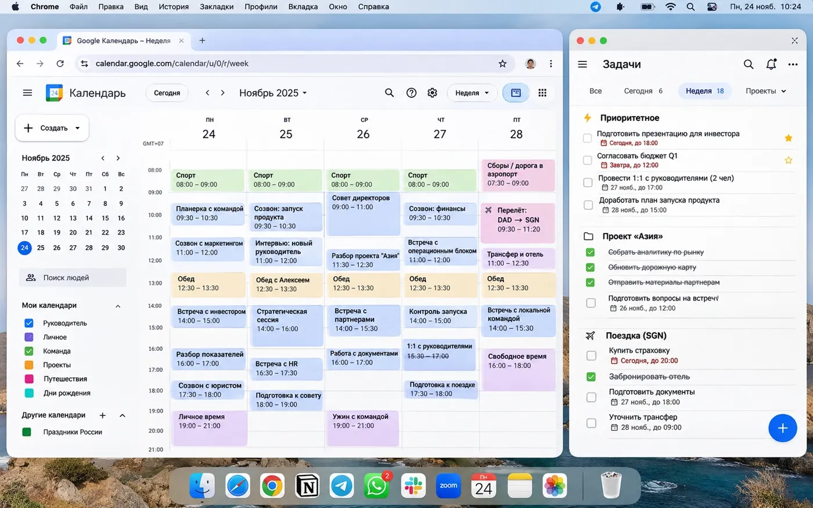
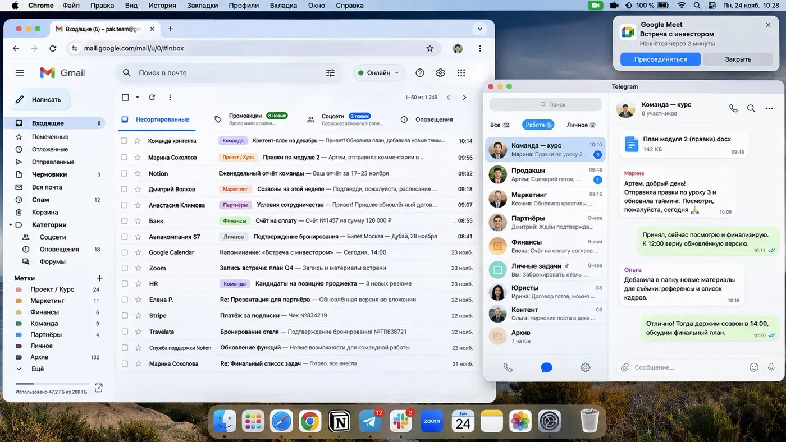
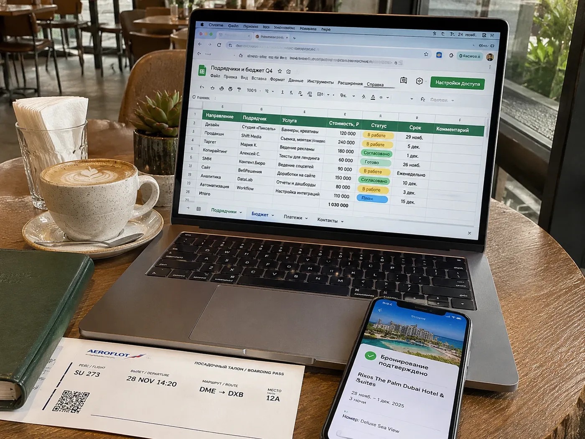
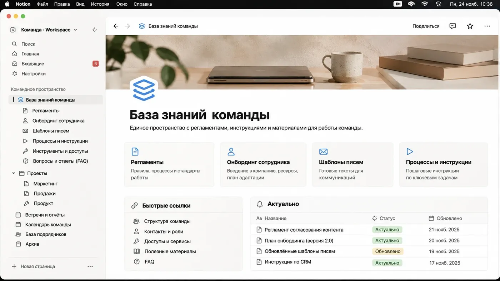

Учу тому, за что платят предприниматели
Шесть лет я работаю ассистентом и руководила командой ассистентов, поэтому в программе только задачи, которые реально дают на проектах.
Авторское сопровождение Кати Полоз
Освой профессию с нуля за 6 недель и начни зарабатывать от 150.000 ₽ в месяц
Расскажем, как конкретно тебе стать AI бизнес‑ассистентом, а также раскроем нашу методику, как мы сопровождаем учеников до первой зарплаты
ориентир дохода ассистента
мой опыт бизнес‑ассистента на удалёнке
Совмещаю материнство и работу ассистента

ориентир дохода ассистента
с двумя проектами или в координаторахмой опыт бизнес‑ассистента
на удалёнке, в офисе не больше месяцаШесть лет я работаю ассистентом и руководила командой ассистентов, поэтому в программе только задачи, которые реально дают на проектах.
Резюме, портфолио, отклики и мои разборы раз в две недели, на которых я смотрю твою ситуацию и подсказываю, что поменять.
По каждому заданию обратная связь, а для вопросов отдельная тема в чате с моими голосовыми ответами.
Все задания ты делаешь для одной сферы бизнеса, поэтому к 4‑й неделе у тебя цельное портфолио по моему шаблону.
Расскажем, как конкретно тебе стать AI бизнес‑ассистентом, а также раскроем нашу методику, как мы сопровождаем учеников до первой зарплаты

Расскажем, как конкретно тебе стать AI бизнес‑ассистентом, а также раскроем нашу методику, как мы сопровождаем учеников до первой зарплаты
По моему опыту, учеников и коллег
На 3-4 часа в день
А с двумя-тремя проектами 140-200 тыс. ₽
Программа готовит и к этому уровню
Работаешь из дома или из любой точки мира, в своём ритме.
Не нужны код, дизайн и английский, а опыт администратора или менеджера пригодится с первого дня.
Один проект занимает полдня, его можно совмещать с декретом или основной работой.
Малый бизнес тонет в мелких задачах, и предпринимателю нужен человек, который снимет с него рутину.
От ассистента на одном проекте до координатора, который выстраивает процессы во всём бизнесе.
Нейросети делают черновую работу, а решения и ответственность остаются за тобой, поэтому ты успеваешь больше.
Расскажем, как конкретно тебе стать AI бизнес‑ассистентом, а также раскроем нашу методику, как мы сопровождаем учеников до первой зарплаты
Ассистент работает на одного руководителя и забирает себе его рутину, чтобы тот занимался ростом бизнеса.





Благодаря доступности и простоте искусственного интеллекта в наше время многие задачи, на которые раньше уходило по несколько часов, можно выполнять за 15-20 минут.
Нужно всего лишь один раз разобраться и правильно надиктовывать задачи нейросети. По сути, у тебя будет твой карманный сотрудник, который выполняет все самые сложные и рутинные задачи.
И всё это ты будешь уметь, чтобы зарабатывать от 50 до 150.000+ ₽
Расскажем, как конкретно тебе стать AI бизнес‑ассистентом, а также раскроем нашу методику, как мы сопровождаем учеников до первой зарплаты
До старта
Понимаешь, где в бизнесе нужен ассистент, и выбираешь сферу для своего портфолио.
Неделя 1
Ведёшь календарь, задачи и почту руководителя так, что он перестаёт держать всё в голове.
Неделя 2
Собираешь отчёт, дашборд и презентацию, которые сразу идут в портфолио.
Неделя 3
Берёшь на себя подрядчиков, встречи и поездки и собираешь базу знаний для команды.
Конец 3-й недели
Отдаёшь нейросетям черновую работу и делаешь те же задачи быстрее.
Неделя 4
Резюме и портфолио, с которыми зовут на собеседования.
Недели 5-6
Первые собеседования с предпринимателями и именной сертификат.
Недели 4-6
Только координаторАудит реального бизнеса в портфолио и выход на проекты координатора за 50-150 тыс.
Расскажем, как конкретно тебе стать AI бизнес‑ассистентом, а также раскроем нашу методику, как мы сопровождаем учеников до первой зарплаты